1，深度学习的概念
了解深度学习之前，我们要先讲一下机器学习。
机器学习（Machine Learning）是一门专门研究计算机怎样模拟或实现人类的学习行为，以获取新的知识或技能，重新组织已有的知识结构使之不断改善自身的性能的学科。
机器能否像人类一样能具有学习能力呢？1959年美国的塞缪尔(Samuel)设计了一个下棋程序，这个程序具有学习能力，它可以在不断的对弈中改善自己的棋艺。
4年后，这个程序战胜了设计者本人。又过了3年，这个程序战胜了美国一个保持8年之久的常胜不败的冠军。
---百度百科
上面是百度百科对机器学习的描述，可见，通过机器学习技术，计算机可以和人类一样具有学习能力
机器学习本质是使用算法分析数据，从中学习并做出推断或预测。与传统的使用特定指令集手写软件不同，我们使用大量数据和算法来“训练”机器，由此带来机器学习如何完成任务
而深度学习，其实是机器学习中的一种独特的算法，比较出名的有卷积神经网络，深度学习的算法，通常是模拟人脑神经的学习方式
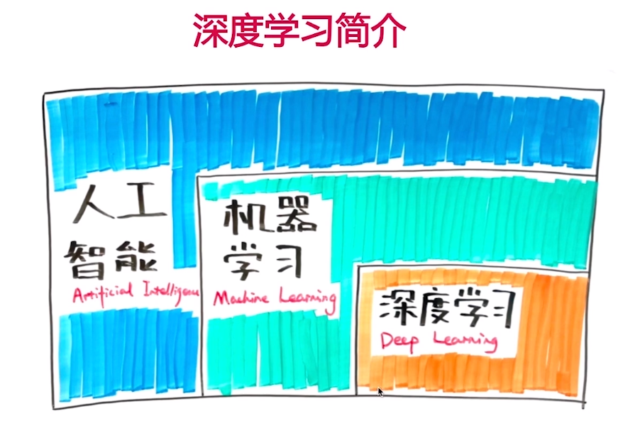
百度百科：深度学习的概念源于人工神经网络的研究。深度学习通过组合低层特征形成更加抽象的高层表示属性类别或特征，以发现数据的分布式特征表示。
深度学习是机器学习研究中的一个新的领域，其动机在于建立、模拟人脑进行分析学习的神经网络，它模仿人脑的机制来解释数据，例如图像，声音和文本。
人工智能开始红火的时候，有一条很著名的新闻，阿尔法狗（AlphaGo）碾压世界围棋冠军柯洁李世石的围棋对战
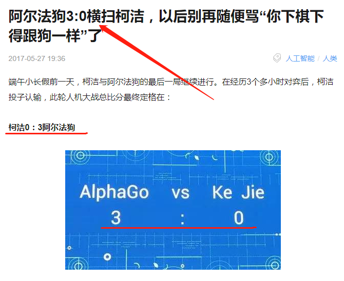
深度学习和机器学习，就是非常火的概念人工智能（AI）所依赖的重要技术之一
2，为什么要讲深度学习，为什么学习
通过上面的讲解，比如我一开始就会认为，深度学习，不过是与我们网络编程不同领域的另一项技术罢了。 如果只是这样我觉得大家感兴趣自己去研究即可。然而，我觉得它对我们每个人，都有很深刻的意义，所以，这就是为什么要讲深度学习。 那到底有什么深刻的意义？
只有明确了是什么，为什么，才能推演怎么办
深度学习是什么？是让机器学习人类的学习方法，那么，什么是人类的学习方法？我们，真的清楚自己是怎么学习的吗？大家可以主动分享下自己的学习方法，通常的学习方法（包括我自己），是
阅读知识的描述，理解意思，然后不断重复
。讨论学习方法的孰优孰劣之前，我们很有必要思考一下，我们为什么要学习？
通过学习掌握一些技能来取得知识，金钱，地位，友情，爱情，等等等等，这个能是大多数人能想到的答案，但是，这并不全面。
我们先假定人类是一种计算机，我们所有感官接受的信号是输入，我们所有的反应是输出，我们的大脑，就是处理这些信息的函数，就是模型。然后观看以下视频
1，人们所看到的世界，是演化出的视觉模型所产生的输出：信号----视觉模型----输出
2，人对事件的判断，也是基于模型，人类所能得到的信息是有限的，所以需要模型去预测事件的结果
3，最终，人的行为，人的冲突也是因为模型的不同


人类演化的结果，就是相信自己的模型，这是生存的必然条件，就像在野外看到老虎要赶快逃跑一样，看到老虎是输入，逃跑是输出，不相信模型，就不能存活。
回到最初的问题，为什么要学习，学习正是为了构建我们的模型，从而更好地生存。
----------------------------------------------有人可能会想，现在又不是古代的蛮荒时期，科技这么发达，我们处在网络时代，黄金时代，人类不再茹毛饮血，上升到生存意义，过分了吧。那我们就来看看网络时代的事情。
正如我们会用食物引诱宠物一样，网络也一直在用人性引诱大众，权利，情色，金钱等等引诱，早已司空见惯。可是有时我们对有一些并非这类低俗的内容，仍然难以抗拒？到底是因为人类的哪个生理模型
说出来大家可能不信，就是因为我们的好奇心
现在的人们已经认识到好奇心的重要性，却也发现随着年龄的增长，好奇心会慢慢消退，学习能力也不如从前，于是，很多人认为，好奇心和学习能力，随着年龄的增长会不断消退，所以有的人认为自己来不及学习，就认命了。
以上多数人对好奇心的认识，但是，这完全错了
事实上，好奇心和食欲，性欲一样，是人类的基本欲望。和好奇心相关的大脑区域就是负责奖励机制的伏隔核，也是对成瘾行为起重要作用的区域
（生物角度）因为我们不得不依赖自己的模型去存货，所以本能上会想尽办法去建立模型（也就是学习），而好奇心就是进化出来，促进学习的奖励机制！
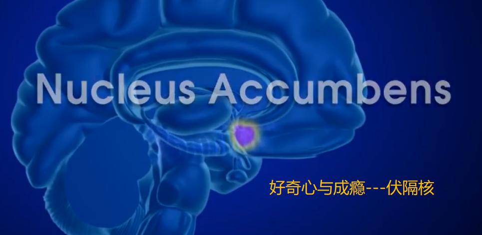但
是这与现实好像不太相符，很多家长费劲心力也无法让孩子喜欢学习，有的人也觉得自己根本不爱学习，事实上，不是我们不喜欢学习，而是不喜欢不符合大脑特点的学习饥饿时大脑产生食欲，无法抑制的想进食，当我们对知识饥饿时，会产生求知欲，会无法抑制的想学习，但我们成长过程中的学习并不是这样。 很多时候，我们只是知道，需要学习，但是从来没有产生过好奇心，最后就变成了强迫自己去记忆
----------------------------------------------既然好奇心是促进学习的关键，那我们如何调动好奇心呢，那就要知道，我们到底对什么好奇
好奇心的目的是为了构建知识，让我们适应环境得以生存，因此我们对知识好奇，然而我们不是通过记忆来学习知识，而是通过归纳例子来总结知识（后面的学习方法会讲），所以其实我们好奇的是，---→ 例子，而生活中，例子，正是“故事”
这就解释了为什么我们都喜欢故事，大多数演讲也都以故事开头，为什么春秋战国的纵横家都是以讲故事来游说。因为故事可以瞬间让我们的大脑清楚知识的输入和输出，而例子是输入输出的一种具体情况。当只有输入或者输出时，好奇心会急切的驱使我们去寻找另一个，帮助自己搜集完整的例子，以获得知识。
生活中，我们的好奇心，早已被利用，比如标题党们，大致分为两大类：例子残缺和知识白送
例子残缺：只给我们输入或者输出，利用你的好奇心，让你落入陷阱
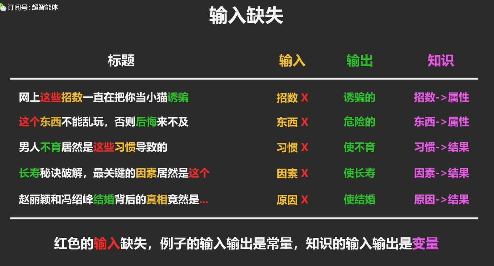 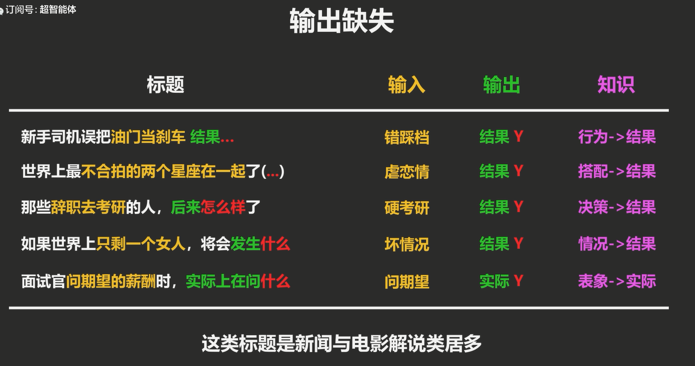知识白送：又分分类知识（判断依据）和回归知识（如何做到）
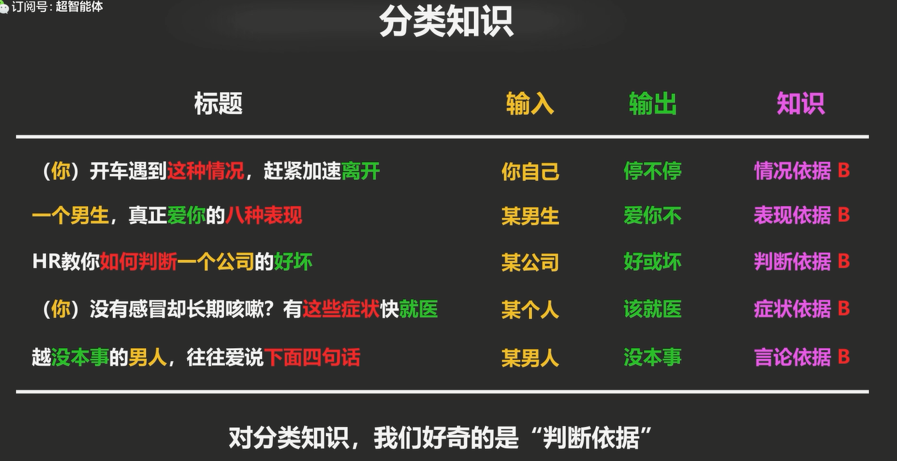 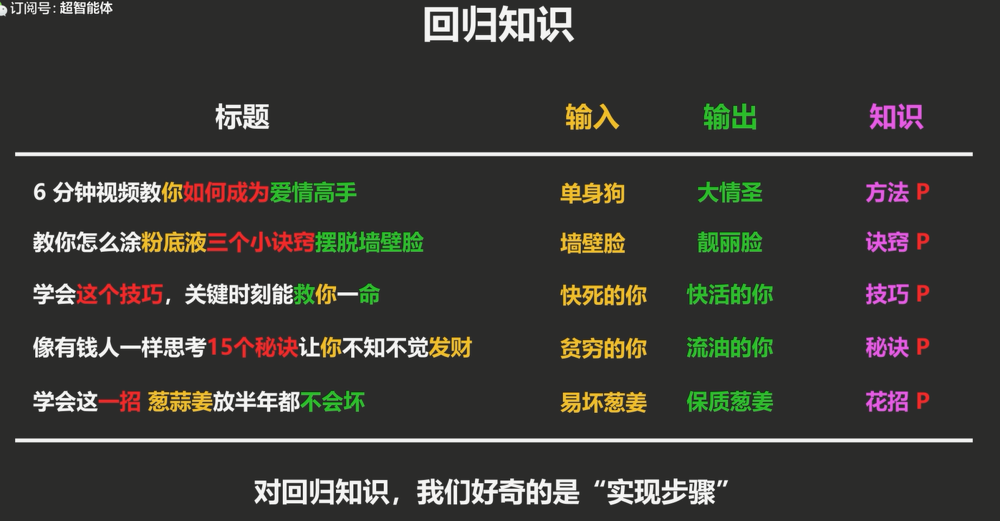从上面的例子可以发现，只要产生了好奇心，都难以抵挡这种诱惑，也就是说，
没有人是不喜欢学习的
(如何在生活学习中利用好奇心--思维导图) ----------------------------------------------可是还有一个问题，为什么我们的好奇心会随着年龄的增长而下降呢？这就要降到好奇心的最大对手---固执心---我们已拥有的知识
我们不光进化出了构建模型的好奇心，也同时产生保护已有模型（知识）的固执心。小孩子没有知识。固执心弱，好奇心强，学习能力强，但抗欺骗能力弱。而成人已构建知识，固执心强，好奇心弱，学习能力弱，抗欺骗强
所以我们有必要说一下洗脑，洗脑的基本操作就是利用人性的弱点（好奇，亲情，恐惧，贪念等等），在目标的脑中，通过例子，构建一个观念模型，由于决策是自己的模型所产生，所以不会意识到自己被欺骗（人都是最相信自己的）， 更可怕的是，一旦观念建成后，固执心就会保护模型，所以越是告诉洗脑的人传销是骗人的，他越是加强保护心里，所以传销植入过深的人，就出来之后，都要进行心理康复，有的还会自己跑回传销窝点，为此我特意去找了个抖音的洗脑视频
其实广告植入也是同样的原理，包装多个真知识，其中掺入广告观念植入，
插句题外话：连传销都知道通过例子构建人脑知识模型，而我们的学校教育缺很多仍然是机械记忆
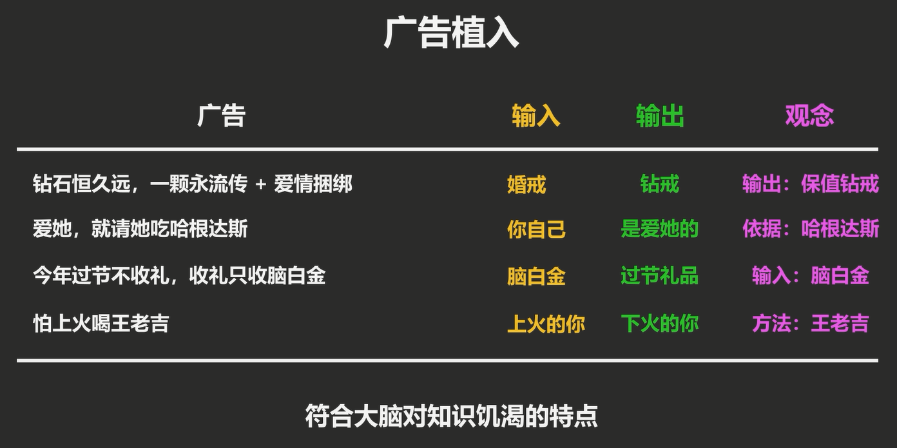所以，这个时代，我们更需要学习，来构建模型（知识）,提升辨别好的模型（知识，利于生存）和坏的模型（坑害我们，洗脑）的能力。而想要不断学习，必须要保持初学者一无所知的心态，才会激起好奇心，才会对知识饥饿
这也是Steve Jobs在斯坦福大学毕业典礼上致辞中的最后一句话 ----------------------------------------------当然，作为程序员，学习能力对我们来说更为重要，那就一起从秃头开始变强把！！！
上面我们用了很长的篇幅讲了为什么要学习，就是为了构建更好的知识模型，为了生存，为了不被欺骗。以及学习的关键，调动我们的好奇心。而且没有人是不爱学习的。那么，回归到我们开始的疑问，什么是学习，也就是，人们是如何构建自己大脑中的模型的？什么才是正确最高效的方式？
3，我们还是先看几个小故事，同时这也是三个问题，谁有自己的答案，可以分享交流
1，魔改版倚天：疑问一
2，老子:道可道，非常道
3，《后会无期》：懂得很多道理，却依然过不好一生
带着这三个疑问，我们一起来看一下，什么是学习
4，什么是学习，高效的方式
----------------------------------------------什么是学习，学习和记忆是什么关系
举个例子，大部分小孩子小学时候，数学经常拿满分，到了初中后，拿满分越来越难。
其实并非没有努力，也不是因为难度不同，而是运用了两种不同的能力。
小学二年级的惩罚，运用的主要是记忆能力，考试题都在乘法表的81中情况之内，只要没有偷懒就可以拿满分，但是，记忆可以解决情况有限的问题。
记忆的容量有限（我们没办法记住所有情况），而且难以集齐（没人知道所有的情况），实际的生活中，我们要面对无数种情况，但是记忆的例子却是有限的，
这就是为什么我们需要学习
学习就是从有限的例子中，找出问题（输入）和答案之间规律的过程，而这个规律，就是知识。所以学习不是记忆，而是用知识，压缩信息。
而在人脑中，学习的过程，就是重塑大脑链接的过程。学习的第一步是明确什么是问题（输入），什么是答案（输出）。
很多人的“学习”，一开始就没有搞清楚问题和答案，最后知识记住了知识的描述，然而知识不是信息，学习不是记忆。所以，记住知识，不等于学会知识。 解释了上面的两个例子。
这也是在“教”和“学”中最容易犯的错误，以为将知识告诉了某人，对方就能学会。和，以为听懂了知识，就是学会了。
知识只是描述和指引作用，这其实就是老子所说的道可道非常道（道是不能表述的，我说出来，你也听不懂），也是王阳明的知行合一（说出来不代表知道，能做到才是真知道）
这也是为什么，在讨论，写文章，辩论的时候，一定要伴随着例子，同样，这三种也会大大加强我们大脑中知识的链接，也就加强了我们的学习。
所以在看书或其他方式的学习时，要学会区分那些时例子，那些是知识
同样，华罗庚的先把书读厚，再把书读薄，就是先尽可能的搜集更多的例子，以体会“问题”和“答案”之间的关系，进而掌握知识，忘掉例子，，这就解释了第一个例子，忘记了所有的招式，是因为已经掌握了知识，已经可以应对无限的情况。
最后，学习是为了解决新问题，所以需要验证。从现有的例子中提炼出来的知识，是否能描述问题和答案的真正规律，通过验证结果并不断修正知识，而不是仅仅记住一些例子。
正确的学习过程
：用例子理清问题（输入）和答案（输出）的关系，重塑大脑链接，获得知识，并不断验证知识有效性 ----------------------------------------------而人脑学习方式分为两大类，运动类和思考类。区别在于是否依靠意识，思考类擅长推断问题，比如看书，但此类速度缓慢。运动类比如走路，游泳，不需要思考。
学不会的原因在于搞错了输入输出，用思考类方式去学习所有知识，比如通过看书去学游泳，不通过例子，仅仅记忆知识。
英语对于编程来说是十分重要的，我们就以运动类的语言为例，正确的输入输出为下图，而应试英语则把学习变成了从文字到文字的思考类问题，百词斩背单词的偏差。
英语学习最致命的是插入了中间思考这个输出，不仅“输出”错误，而且非常缓慢；所以出国后会发现所学英语的输入和真实的输入是不同的
不通过例子，仅仅记忆知识，也是特别常见的错误，还是学习英语，语言的输入不是一个单词，而是整个句子，想把握一个单词真正的含义，需要大量体会
不同的例句，但大多时候，我们仅仅记住了单词的中文描述，去记忆别人成功的总结，当作信息记忆，而不是作为知识学习，就永远不可能掌握知识

正确的学习方法
：我们既然已经知道学习要通过例子 ，找出输入与输出的关系，重塑大脑链接。那要怎么应用到学习中呢？思维导图
很多人都听说过思维导图很强大，我以前也用过，感觉没什么用，那是因为我们不知道它为什么强大，以至于用错了方法。我们再看常见的学习---阅读知识，理解意思，不断重复。其实这一过程知识在应用人脑的阅读能力，产生学会了的错觉，实际是能看懂的感觉，并没有在学习。特别是在读理科书的时候，总会觉得每个字都认识，但就是看不懂。 思维导图的作用，不是帮助我们记忆知识和例子，而是先写出一个关键词，然后你会问自己，它是什么，丛磊不断联想起很多例子，你会强迫自己用这一个关键字描述所有例子，你其实就是在压缩信息，获取知识。当你 问自己，它的作用时，实际你在思考，输入是怎么变成输出的。在这个过程中，你的大脑链接被例子改变，最终关联到一个关键词上，就完成了一次学习。
所以，思维导图并不需要被记忆，我们要的，只是这个学习的过程
费曼技巧
我们要介绍的第二个学习法就是费曼技巧，费曼技巧只有两步，其一是学习，其二是解释，学习时可以使用包括思维导图的任何方法。可是为什么多了一步解释，就有如此强大的作用，这其中到底 到底达成了哪些目的？想象我们是怎么向某人解释知识的。可能我们看了很多例子和知识的描述，但是我们不能全部重复给对方听，只能浓缩信息，挑核心知识解释。浓缩信息会化成一个个句子，每个句子都描述了子知识的输入和输出关系， 最终理清了所要解释的知识。而这些，其实思维导图也是可以做到的。
解释最重要的作用，是验证知识。与学习时不同，解释时所用的不再是学习时用的例子，而是对方所面临的输入和输出，帮对方理清关系。如果对方无法理解则需要举新的例子。 这些是当初学习时所未遇到的情况。当我们可以解释这些新情况时，就验证（有时也是修正）了你的学习。
思维导图是以过程为导向的学习方法，核心在于拆分知识。费曼技巧是以目的为导向的学习方法，核心在于验证知识。但费曼技巧其实我们早就学习过，就是孔子说的：温故而知新可以为师矣。 这里的故，就是学习时的例子，新就是从未见过的例子。当可以从又有限的例子中提取知识解释新的情况时，就意味着真正的学会了知识。
这也就是为什么我们在给别人讲解问题的时候，自己有时也会对知识有新的认识。
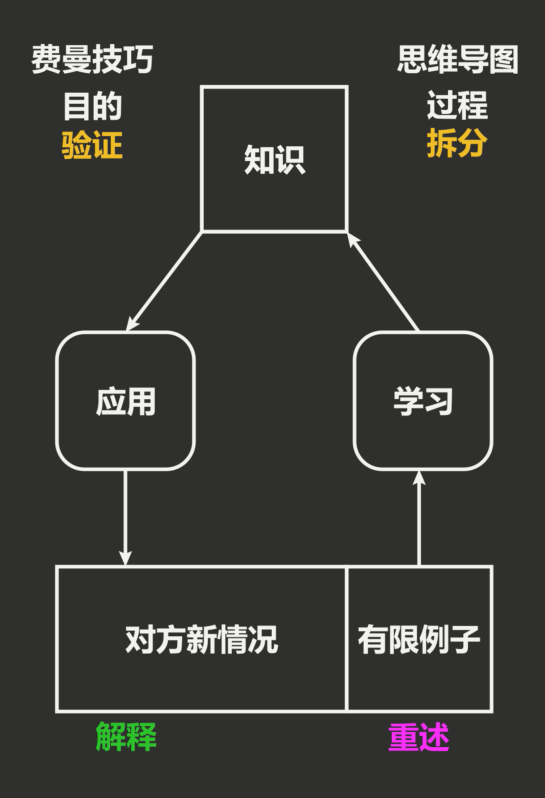 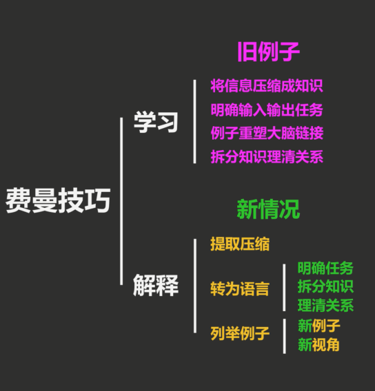
5，深度学习
以上我们讲了：人类是如何学习的，以及正确的学习方法。因为深度学习中的神经网络，其实就是一种仿生学的产物。简单讲，神经网络就是要创造一个函数，给这个函数不同的输入，得出相应的输出。 比如，输入一张下面的图片，通过函数的分析（神经网络，即模拟大脑），得出猫的结论。 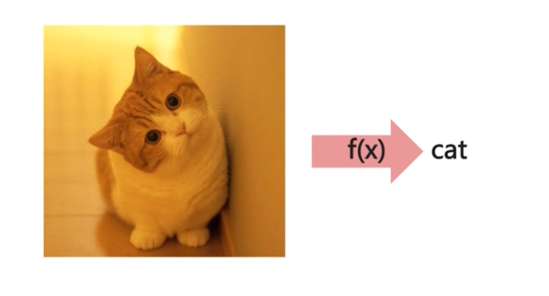
而在实际应用中，主要应用在：
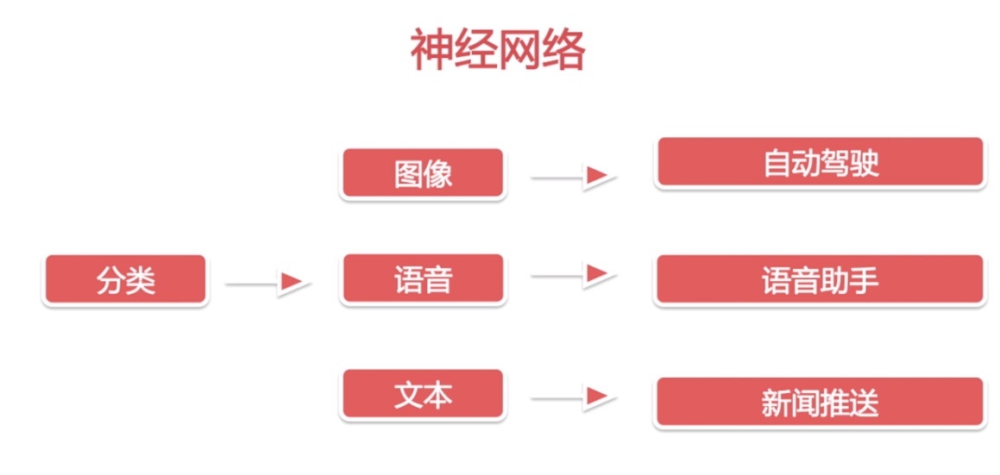下面我们从以下四个基本的组件，简单了解下神经网络的基------
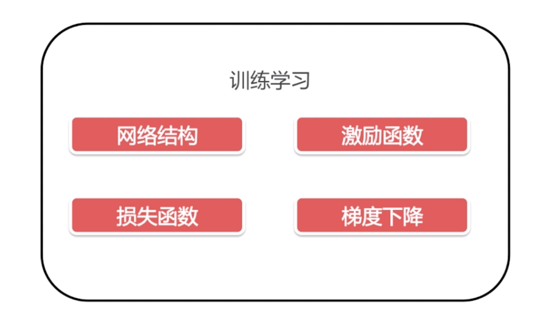网络结构
：神经网络的主要特点之一是在于与我们普通的函数相比，具有一种结构性的顺序，就是所谓的节点和层的概念下面这张图，就是一个简单的单层神经网络，x1,x2,x3是输入层，然后是隐含层（就是函数），每个圆球我们暂且把它叫做神经元，再往由是输出层。x1,x2,x3与隐含层计算，然后将结果输出到输出层，最终得到一个学习后的Y，就是最终的预测值。
一般的神经网络，每层的节点可能不是很多，但是都会有很多的层。
为什么要多层设置。联想下我们刚刚讲过的学习，一般是一个输入对应一个输出。当我们脑中没有这个知识，就是不能给出输出的时候。我们可以通过一种更高级的方法---拆分知识。将其分成几个小的输入和输出，这样就能解决。（上面怕讲不完所以没讲到）
举个例子，我们要去一个比较远的的地方，特别当我们是小孩子的时候，路途比较曲折，没有地图的话，我们怎样记住路呢。其实很多人就是自己在心里通过几个标志性的地方（比如某个转弯），将路程分为了比较好记忆的几个小段。
神经网络也是一样，比如分析小猫的图片，倘若只有一层，这一层隐含层中的神经元就会很多，分析很慢。若是拆分多个层，第一层分析色彩，第二层单一的线，第三层小形状等等。。每一层都很快很清晰的完成。这个就是神经网络学习的大概过程，也对应了它深度的增长。
神经网络第二个重要的特点是学习非线性，也就是逻辑回归
我们来进入一个神经元内部。每一个神经元都有独立的判断功能（就是一个逻辑回归的模型），它自己就可以进行一个机器学习的过程。左侧输入x1,x2,x3，通过神经元中的函数，进行线性化分析。然后通过激励函数得出激励后的预测值Y。
正向传播，反向传播，不断修正学习。框架原理。技术深度够的话就是按照这个原理改框架，但大多数目前都是选择框架的使用者。
学习深度学习对算法的要求是最高的，有算法基础的话，下一些功夫是比较容易入门的。所以深入知识就不再深入讲解，技术是讲不完的，技术也不断更新换代。最重要的学习方法。
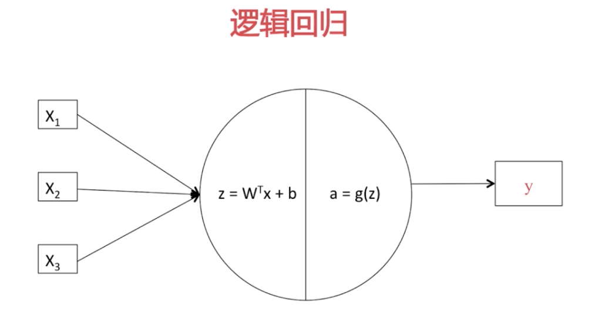 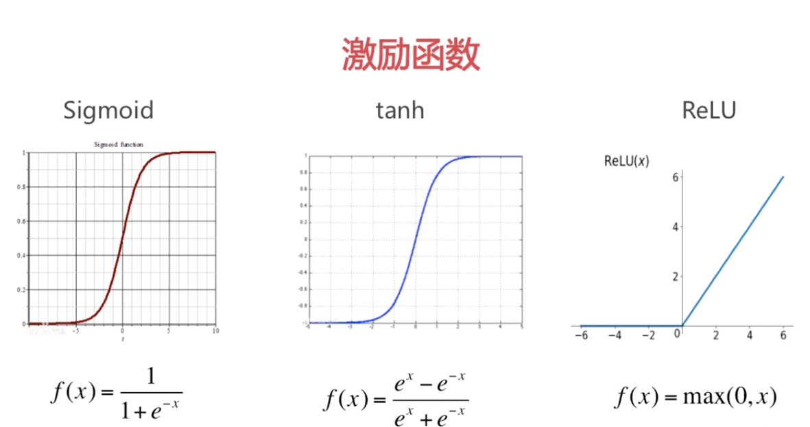 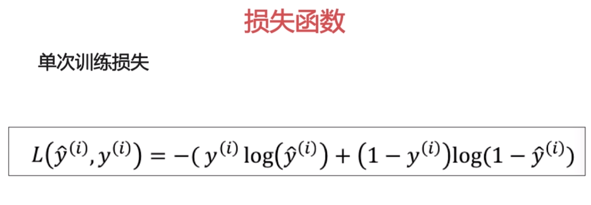6，应用
机器学习多用于数据处理，深度学习：图像识别，机器翻译，图像生成，alphaGo
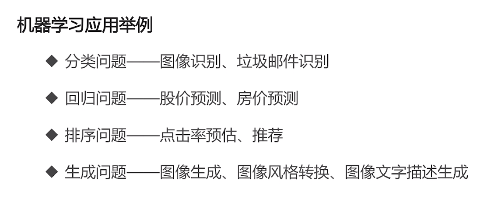由于机器学习和深度学习是计算机来进行的，它比人类大脑学习有个优势就是可以处理大量的数据，并得出规律，预测未来，这就产生了极大的价值。
比如淘宝，记录了用户浏览的商品，收藏的商品，购买的商品等等信息，然后通过机器学习算法，做相应的推荐。
而这一技术的最大受益者，目前可能就是今日头条的创建者，北京的字节跳动。今日头条通过机器学习和深度学习算法，为用户提供个性化、高质量的内容推送，这是它迅速崛起的核心原因之一。
而对于BT，我们也有自己的用户群体，是否也能利用深度学习技术，分析学员行为，把握行业动向，以压倒性优势干掉竞争对手，快速发展呢？